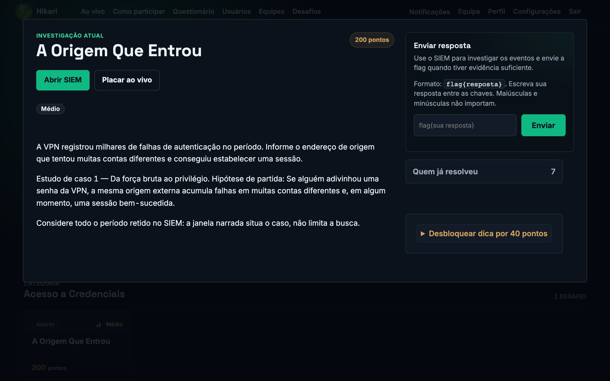
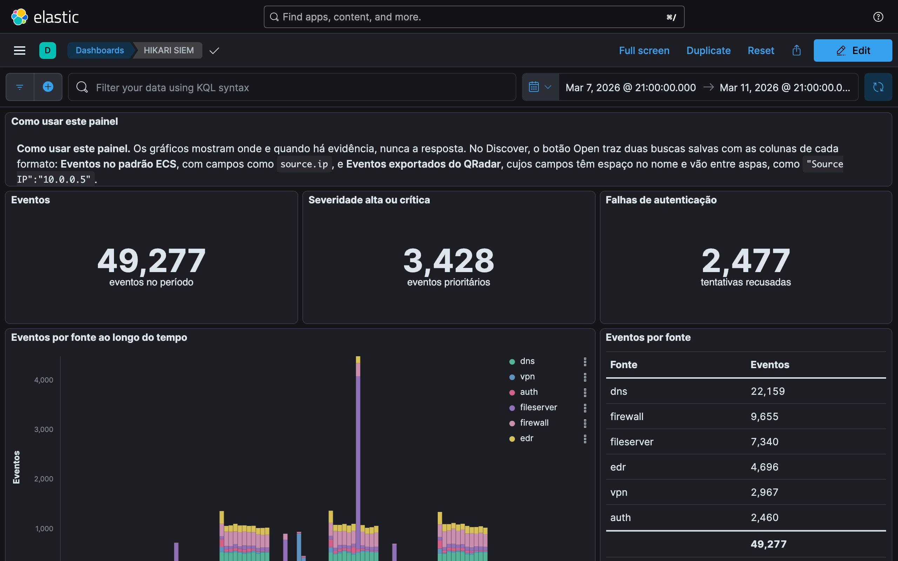
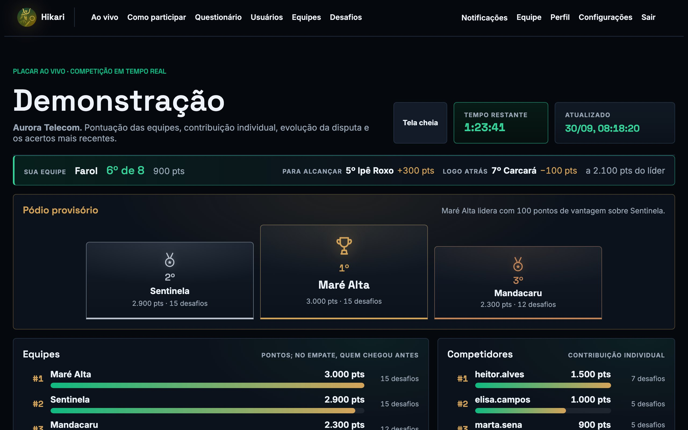
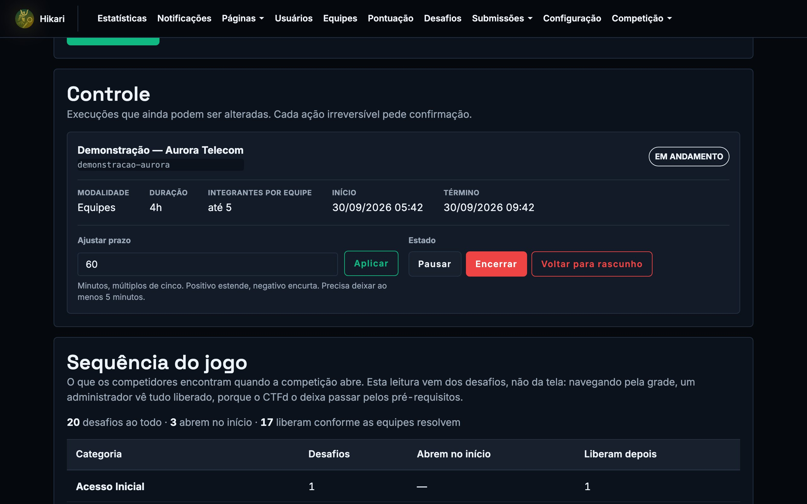

A resposta está nos eventos
Logs de segurança fluem por Kafka, Logstash e Elasticsearch. Cada flag é o resultado de uma consulta sobre eles.
event.dataset:"vpn" and event.outcome:"failure"
Threat hunting gamificado · ITA
Desafios reais, ameaças ocultas.
Competições de defesa em que cada resposta sai de uma investigação num SIEM de verdade. As evidências chegam por fases, como num incidente, e cada prova é conferida antes da largada.
A plataforma
Telas reais da plataforma, capturadas na Aurora Telecom, a prova fictícia usada nas demonstrações e no minicurso.




Como funciona
A resposta de cada desafio está nos eventos de segurança e aparece para quem formula a pergunta certa.
Logs de segurança fluem por Kafka, Logstash e Elasticsearch. Cada flag é o resultado de uma consulta sobre eles.
Resolver um desafio-portão libera uma nova fase de evidências para todas as equipes, uma única vez. A prova avança como um incidente avança.
As equipes investigam no Kibana, com KQL, painéis e pivôs, sobre o mesmo índice e na mesma janela. O que diferencia uma equipe é a pergunta que ela faz.
Demonstrações
Cinco vídeos curtos na Aurora Telecom, com narração e legendas em português.
Uma competidora erra pela pergunta óbvia, refaz a pergunta no SIEM, acerta e usa a dica do desafio seguinte.
A entrada do SIEM, os atalhos de caça, a busca em KQL, o pivô entre fontes e o painel.
O pódio, a classificação com um só critério de desempate, a evolução e os destaques.
A biblioteca de desafios, o agendamento, o controle da prova e as estatísticas.
A solução comentada, o questionário, o certificado verificável e a exportação para estudo.
Engenharia de prova nacional
A plataforma confere sozinha, a cada versão e antes de cada prova, tudo o que sustenta uma competição nacional.
A resposta de cada desafio é recalculada sobre a evidência, e cada dica é conferida contra o campo que contém a resposta. A prova abre com tudo conferido.
Cada fase acrescenta evidências e preserva as respostas já dadas. Cada desafio abre junto com a própria evidência.
Uma suíte automática percorre cadastro, equipes, desafios, SIEM, placar, certificado e análise de dados antes de cada publicação.
Pontos e, no empate, quem chegou antes àquela pontuação. Tela cheia, pódio e placar oficial seguem a mesma ordem.
Prazo, pausa, extensão e encerramento a um clique, com registro de cada ação e ponto de restauração ensaiado.
Solução comentada em cada desafio, questionário curto e certificado nominal com código de verificação.
Provas conduzidas
O Hikari conduziu o CTF do RESEG, o exercício setorial de cibersegurança das operadoras de telecomunicações promovido pela Anatel, e conduz a arena técnica da 1ª Ciber Week Brisanet.
15 de outubro de 2026
Arena de Desafios Técnicos conduzida no Hikari: seis horas de prova, com equipes de até cinco pessoas.
26 de agosto de 2026
Treze equipes e 76 inscritos numa janela única de quatro horas, com 125 desafios, todos resolvidos ao menos uma vez, e 54.698 consultas ao SIEM.
14 de agosto de 2025
O CTF do exercício setorial rodou na versão antecessora da plataforma, com profissionais de sete organizações do setor.
edições avaliadas em contextos acadêmico e comunitário
respostas ao questionário de avaliação
consideraram os desafios realistas ou muito realistas
nota média, de 1 a 5, para a eficácia no aprendizado
Avaliação publicada no SBSeg 2025, com edições entre novembro de 2024 e abril de 2025.
Implantação
O Time Hikari sobe o ambiente, carrega o cenário, ensaia com a organização e acompanha o dia da prova.
Uma única máquina reúne plataforma, pipeline de eventos e SIEM. O Kibana fica atrás do controle de acesso da plataforma.
Cenários do seu setor, com respostas conferidas por código, ou o acervo já usado nas competições nacionais.
Minicurso
Da hipótese à detecção em três estudos de caso numa operadora fictícia. Em cada um, a consulta óbvia leva a uma isca, e a caçada avança quando a pergunta muda.
A origem que adivinhou a senha da VPN e o administrador que ela criou.
Um implante disfarçado de atualizador e a exfiltração que aparece na soma.
A enumeração do Active Directory que antecede a cifra dos servidores.
Ciência e mídia
SBSeg 2025
Artigo completo no Simpósio Brasileiro de Cibersegurança, com a avaliação de três edições.
Ler o artigo →RNP · Hackers do Bem
Caso de uso publicado pela Rede Nacional de Ensino e Pesquisa.
Ler na RNP →Teletime
O contexto do RESEG, a simulação de cibersegurança com as operadoras de telecomunicações.
Ler a reportagem →Time Hikari
Coordenação
Lourenço Alves Pereira Júnior
Professor do Instituto Tecnológico de Aeronáutica. Coordena o projeto e orienta a pesquisa que deu origem à plataforma.
Contato
Licenciamento, implantação, cenários sob medida, minicurso ou imprensa. Conte o que sua organização precisa e o Time Hikari responde.